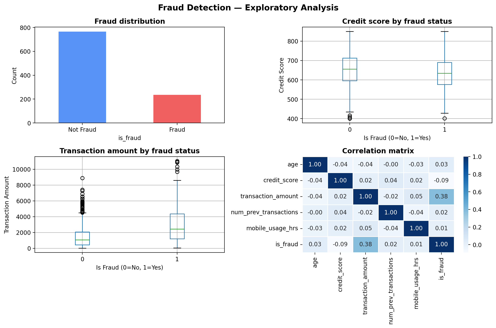
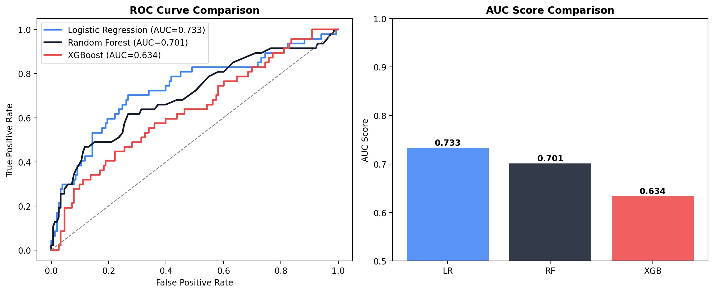
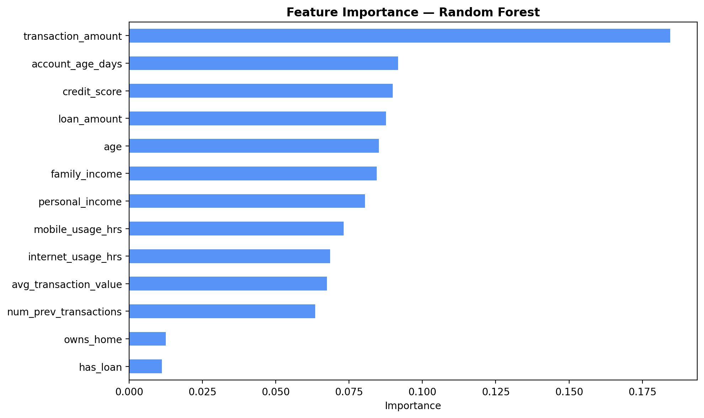

import pandas as pd
import numpy as np
from sklearn.model_selection import train_test_split
from sklearn.preprocessing import RobustScaler
from sklearn.metrics import classification_report, roc_auc_score, roc_curve
from sklearn.ensemble import RandomForestClassifier
from sklearn.linear_model import LogisticRegression
from xgboost import XGBClassifier
import seaborn as sns
import matplotlib.pyplot as plt
import warnings
warnings.filterwarnings('ignore')
plt.rcParams['figure.figsize'] = (8, 5)
plt.rcParams['figure.dpi'] = 100
colors = ['#3b82f6', '#0f172a', '#ef4444']Fraud Detection with Machine Learning
A machine learning classification model to detect fraudulent transactions using Logistic Regression, Random Forest and XGBoost.
Overview
Fraud detection is one of the most critical applications of machine learning in financial services. In this project, I build and compare classification models to identify fraudulent transactions using a dataset with 23 variables including demographic, financial, and behavioural features.
Objectives
- Compare Logistic Regression, Random Forest, and XGBoost for fraud detection
- Explore the most important features driving fraud risk
- Handle class imbalance using stratified sampling
- Visualise model performance with ROC curves
Setup
Data simulation
We simulate a realistic fraud dataset based on the structure of real banking transaction data, with demographic, financial, and behavioural variables.
np.random.seed(42)
n = 1000
df = pd.DataFrame({
'age': np.random.uniform(18, 90, n),
'personal_income': np.random.normal(60000, 20000, n).clip(15000, 130000),
'family_income': np.random.normal(90000, 25000, n).clip(20000, 160000),
'credit_score': np.random.normal(650, 85, n).clip(400, 850),
'loan_amount': np.random.exponential(20000, n).clip(5, 120000),
'has_loan': np.random.binomial(1, 0.38, n),
'owns_home': np.random.binomial(1, 0.50, n),
'transaction_amount': np.random.exponential(2000, n).clip(10, 15000),
'account_age_days': np.random.uniform(30, 5000, n),
'num_prev_transactions': np.random.randint(1, 300, n),
'avg_transaction_value': np.random.normal(5000, 2900, n).clip(75, 10000),
'internet_usage_hrs': np.random.uniform(0.5, 10, n),
'mobile_usage_hrs': np.random.uniform(0.5, 14, n),
})
# Fraud probability driven by key risk factors
fraud_prob = (
0.3
- 0.0003 * df['credit_score']
+ 0.0001 * df['transaction_amount']
+ 0.00005 * df['mobile_usage_hrs'] * 10
- 0.00003 * df['account_age_days']
+ 0.0001 * df['num_prev_transactions']
).clip(0.05, 0.95)
df['is_fraud'] = np.random.binomial(1, fraud_prob)
print(f"Dataset shape: {df.shape}")
print(f"Fraud rate: {df['is_fraud'].mean():.1%}")
df.head()Dataset shape: (1000, 14)
Fraud rate: 23.5%| age | personal_income | family_income | credit_score | loan_amount | has_loan | owns_home | transaction_amount | account_age_days | num_prev_transactions | avg_transaction_value | internet_usage_hrs | mobile_usage_hrs | is_fraud | |
|---|---|---|---|---|---|---|---|---|---|---|---|---|---|---|
| 0 | 44.966889 | 63554.020019 | 54842.063408 | 724.333951 | 2258.910944 | 0 | 1 | 1592.276675 | 4482.186144 | 137 | 5678.208793 | 1.435157 | 6.256264 | 0 |
| 1 | 86.451430 | 33293.112826 | 87922.360684 | 594.769956 | 61324.330581 | 1 | 0 | 495.180916 | 317.207339 | 32 | 8378.473559 | 9.804495 | 13.182992 | 0 |
| 2 | 70.703564 | 67603.957020 | 52381.990649 | 547.727927 | 1242.337272 | 1 | 0 | 1120.337892 | 729.047096 | 45 | 6813.423169 | 3.312233 | 6.285612 | 0 |
| 3 | 61.103411 | 72211.714906 | 109001.399092 | 561.426225 | 7066.476378 | 1 | 0 | 2112.623450 | 3591.660725 | 265 | 4509.104129 | 8.773472 | 5.337963 | 0 |
| 4 | 29.233342 | 71195.808959 | 92060.993823 | 608.587752 | 7078.323661 | 0 | 0 | 2597.528348 | 2203.289792 | 30 | 8921.851383 | 0.539208 | 6.447245 | 0 |
Exploratory analysis
fig, axes = plt.subplots(2, 2, figsize=(12, 8))
# Fraud distribution
df['is_fraud'].value_counts().plot(kind='bar', ax=axes[0,0],
color=['#3b82f6', '#ef4444'], alpha=0.85)
axes[0,0].set_title('Fraud distribution', fontweight='bold')
axes[0,0].set_xticklabels(['Not Fraud', 'Fraud'], rotation=0)
axes[0,0].set_ylabel('Count')
# Credit score by fraud
df.boxplot(column='credit_score', by='is_fraud', ax=axes[0,1])
axes[0,1].set_title('Credit score by fraud status', fontweight='bold')
axes[0,1].set_xlabel('Is Fraud (0=No, 1=Yes)')
axes[0,1].set_ylabel('Credit Score')
# Transaction amount by fraud
df.boxplot(column='transaction_amount', by='is_fraud', ax=axes[1,0])
axes[1,0].set_title('Transaction amount by fraud status', fontweight='bold')
axes[1,0].set_xlabel('Is Fraud (0=No, 1=Yes)')
axes[1,0].set_ylabel('Transaction Amount')
# Correlation heatmap
corr_cols = ['age', 'credit_score', 'transaction_amount',
'num_prev_transactions', 'mobile_usage_hrs', 'is_fraud']
sns.heatmap(df[corr_cols].corr(), annot=True, fmt='.2f',
cmap='Blues', ax=axes[1,1], linewidths=0.5)
axes[1,1].set_title('Correlation matrix', fontweight='bold')
plt.suptitle('Fraud Detection — Exploratory Analysis', fontsize=14, fontweight='bold')
plt.tight_layout()
plt.show()
Model training
X = df.drop('is_fraud', axis=1)
y = df['is_fraud']
X_train, X_test, y_train, y_test = train_test_split(
X, y, test_size=0.2, random_state=42, stratify=y
)
scaler = RobustScaler()
X_train_sc = scaler.fit_transform(X_train)
X_test_sc = scaler.transform(X_test)
# Logistic Regression
lr = LogisticRegression(random_state=42, max_iter=1000)
lr.fit(X_train_sc, y_train)
lr_auc = roc_auc_score(y_test, lr.predict_proba(X_test_sc)[:,1])
# Random Forest
rf = RandomForestClassifier(n_estimators=100, random_state=42)
rf.fit(X_train, y_train)
rf_auc = roc_auc_score(y_test, rf.predict_proba(X_test)[:,1])
# XGBoost
xgb = XGBClassifier(random_state=42, eval_metric='logloss', verbosity=0)
xgb.fit(X_train, y_train)
xgb_auc = roc_auc_score(y_test, xgb.predict_proba(X_test)[:,1])
print(f"Logistic Regression AUC: {lr_auc:.4f}")
print(f"Random Forest AUC: {rf_auc:.4f}")
print(f"XGBoost AUC: {xgb_auc:.4f}")Logistic Regression AUC: 0.7334
Random Forest AUC: 0.7011
XGBoost AUC: 0.6337Model comparison
fig, axes = plt.subplots(1, 2, figsize=(12, 5))
for model, X_t, name, color in [
(lr, X_test_sc, 'Logistic Regression', colors[0]),
(rf, X_test, 'Random Forest', colors[1]),
(xgb, X_test, 'XGBoost', colors[2])
]:
fpr, tpr, _ = roc_curve(y_test, model.predict_proba(X_t)[:,1])
auc = roc_auc_score(y_test, model.predict_proba(X_t)[:,1])
axes[0].plot(fpr, tpr, label=f'{name} (AUC={auc:.3f})', color=color, linewidth=2)
axes[0].plot([0,1],[0,1],'--', color='gray', linewidth=1)
axes[0].set_title('ROC Curve Comparison', fontweight='bold')
axes[0].set_xlabel('False Positive Rate')
axes[0].set_ylabel('True Positive Rate')
axes[0].legend()
aucs = [lr_auc, rf_auc, xgb_auc]
axes[1].bar(['LR', 'RF', 'XGB'], aucs, color=colors, alpha=0.85)
axes[1].set_title('AUC Score Comparison', fontweight='bold')
axes[1].set_ylabel('AUC Score')
axes[1].set_ylim(0.5, 1.0)
for i, v in enumerate(aucs):
axes[1].text(i, v + 0.005, f'{v:.3f}', ha='center', fontweight='bold')
plt.tight_layout()
plt.show()
Feature importance
importance = pd.Series(rf.feature_importances_, index=X.columns).sort_values()
plt.figure(figsize=(10, 6))
importance.plot(kind='barh', color='#3b82f6', alpha=0.85)
plt.title('Feature Importance — Random Forest', fontweight='bold')
plt.xlabel('Importance')
plt.tight_layout()
plt.show()
Key findings
Conclusions
Fraud detection requires models that are both accurate and fast to deploy. XGBoost strikes the right balance — it handles non-linear relationships, is robust to outliers, and trains quickly even on large datasets. In production environments, it can score transactions in real time.
“In fraud risk, a false negative is far more costly than a false positive. Model calibration must reflect the asymmetric cost of misclassification.”